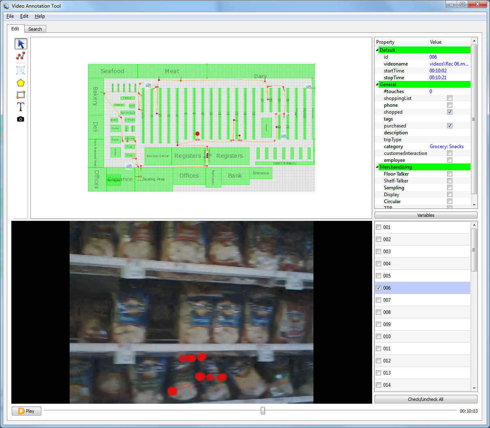

Load or save video annotation project. (Ctrl+O, Ctrl+S)
You can also load individual shopper video files. (Ctrl+L)
These settings apply to the entire project and let you choose floorplan dimensions, background as well as modify Path variables used in the project.
Clicking "Variables" button invokes variables dialog. You can add, delete and edit existing variables. Variables marked in bold are permanent and cannot be deleted. For variables of type "DropDown' clicking on the last column opens the editor of dropdown choices. These can be manually added or imported/exported from/to a comma separated file (CSV). The variables themselves can also be exported or added to/from a CSV file.
The software has two major operation modes represented by the tabs on top of the window: Edit - for data entry and Search - for data/video search and extraction

Select Mouse click to select object and edit its fields in the Field Editor. In Path and Polygon you can select individual points.
Path: Path is not related to the floorplan but represent the individual shopper events and tracks. Left Ctrl-Click to add points. Shift+click to start a new path. Alt+Click inserts a node between the two existing nodes. Every left-click creates a new node, with a right-click choosing subjects orientation.
To change a position of any node, first switch to select/arrow mode (Ctrl+1) and select the desired node. Next, switch to path/edit mode (Ctrl+2) and drag the selected node to edit its position
Path as a whole has these attributes: tags, description, tripType. Trip type can be one of: stock up, fill in, routine and occasion.
A path consists of waypoints connected by straight lines. Each waypoint has the following attributes associated with it: startTime, stopTime, category, purchased, shopped, phone, employee. ‘Category’ combo box can assign a product category to the current location of the customer. You can either select one from the list or type the first letters of the category name.
Start time is automatically taken from the video when the node is created. Stop time is set to start time. Start/Stop times can also be set to current video time by pressing. When playing back the video, current position in the path is show with a red disk moving along the path. F1 or F2.
Purchased (F3), shopped (F4), phone interaction (F5) and employee contact (F6) are checkboxes to tag special event types. Note: shopped is defined as ‘either looking at the products for over 4 sec or touching the products’ Selecting an individual point seeks the video to the points timestamp. Press Delete to delete a selected point. Deleting the last point deletes the whole path.
Edit: In this mode you can move and resize scene objects with a mouse. Drag the bottom right part of the object to resize. Ctrl+click to insert additional points. For Polygon click and drag to move existing points. You can also Shift+Drag objects to create a copy.
Press Delete to remove objects from the scene
Polygon Click to add points. Ctrl+click to start a new polygon. Press Delete to delete a selected point. Deleting the last point deletes the whole polygon.
Rectangle: Click and drag to create a rectangle. The id will be displayed in the center.
Label: Click and type to create a text label
Snapshot: Allows you to tie a static image with any position on the floorplan. Double-clicking the thumbnail will show the image.
You can change the font size for floorplan objects either by modifying the font property in the field editor or by using Ctrl+/Ctrl- shortcuts to increase/decrease the font 10% for the selected objects
The drawing area and video area can be resized by dragging the splitter between them.
Main area to draw the floorplan and subject's paths. The objects snap to the grid. The area can be zoomed in and out with a mouse wheel (scroll pad). It can also be panned when the cursor shows a hand.
If the cursor is an arrow it is over on object to be selected.
While the video is played back, the red disk moving along the path will indicated the current position of the track. The variables in the Field Editor will also update to reflect the current state
Play/pause video or use the slider to jump to a specific time. Time is shown on the right. Space anywhere in the window to play/pause. Press Ctrl-R to enter video playback rate: from 0.2 to 100 (1 is normal speed). Press F11 to toggle video view between normal and maximized.
Use left/right arrows to REW/FF 1 sec and Ctrl+left/right arrows to REW/FF 5 sec.
Lets you edit the attributes of each object. For "Path" objects the time (video frame number) is taken automatically from the video. At the bottom of the field editro there is a button for quick access to project variables
The object list on the bottom right allows you to show/hide Path objects in the drawing area (checkboxes). You can also press Delete to remove selected objects from the map.
The filter button displays a dialog which allows you to show/hide Path objects in the drawing area based on their field values.
Search Tab lets the user search, export and visualize coded track data and video segments. You can search by time interval, trip type or any other user variable. The results are displayed as a clickable list of found path segments at the bottom-right part of the screen. Double-click on the segment to play back corresponding portion of the video in the Edit Tab. Click "Visualize" to generate a heatmap of the search results. Click "Export Video" to save found video segments or click "Export Data" to save all user variables related to found segments into a CSV file.